聚类算法课 · 第 06 个实验
EN从一个分数到一刀：先搭拉普拉斯矩阵，再取 Fiedler 向量，然后沿排序把每个平衡位置都切一遍，留下最便宜的那刀。
字幕已烧进画面，同名 .srt 也单独提供。英文版（英文幻灯片 + 英文配音）在 EN 页面。
对角线是每个点的加权度数，每条边在非对角线上放 −w。每行加起来等于 0，用这个自检。
Fiedler 向量是第二小特征值对应的特征向量。它的正负已经把两队分好了。
按分数排序，把每个平衡位置都试一遍。这里 k=2 得到 cut=3；正中间 k=3 反而是 5。
选择前 k 个点放左边。图会重新上色，cut 按边权重新计算，表格会告诉你为什么中间那刀不是答案。
cut = 3
| k | 左边 | cut | 平衡 |
|---|
k=2 最好，cut=3。正中间 k=3 要付 5 —— 按点数切，根本不知道边权有多重。
| A | B | C | D | E | |
|---|---|---|---|---|---|
| A | 6 | −5 | −1 | 0 | 0 |
| B | −5 | 9 | −4 | 0 | 0 |
| C | −1 | −4 | 8 | −2 | −1 |
| D | 0 | 0 | −2 | 7 | −5 |
| E | 0 | 0 | −1 | −5 | 6 |
| E | −0.553 |
|---|---|
| D | −0.489 |
| C | +0.106 |
| B | +0.418 |
| A | +0.519 |
六道题。点一个选项，立刻告诉你对不对、为什么。
点任意一页看大图。
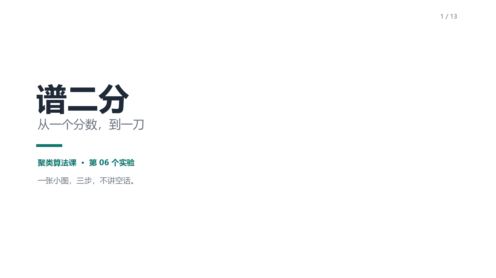
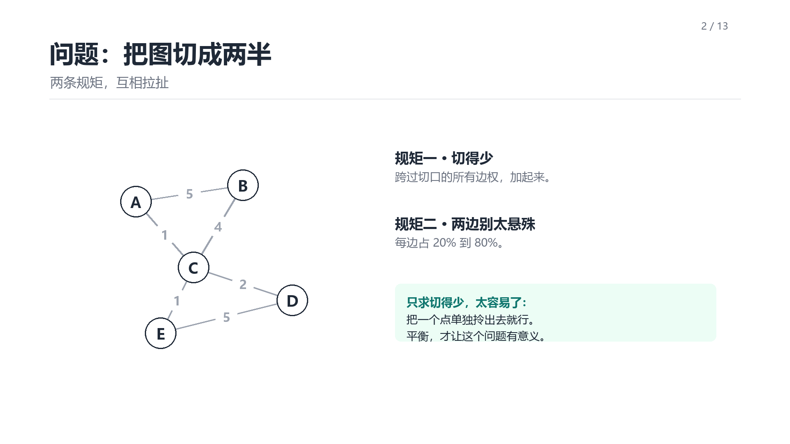
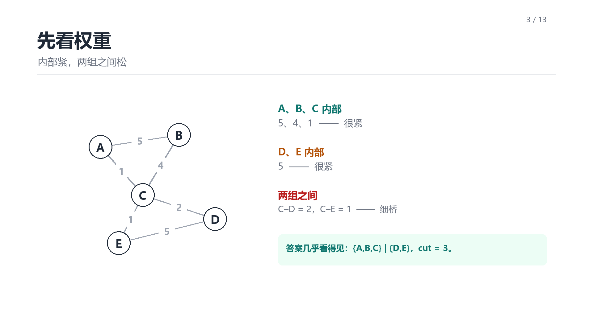
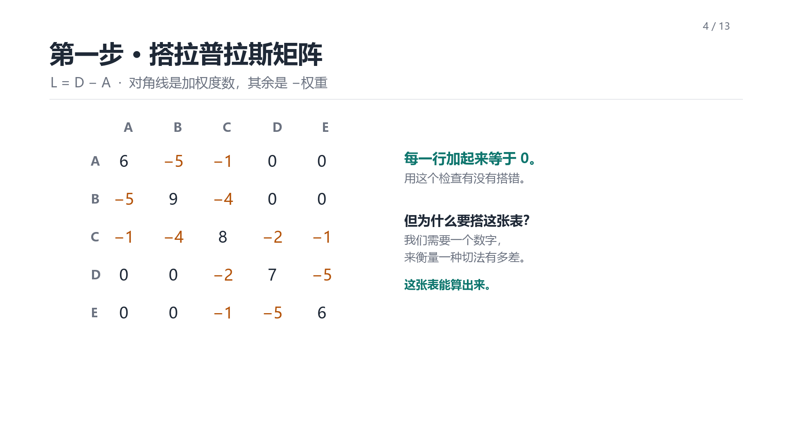
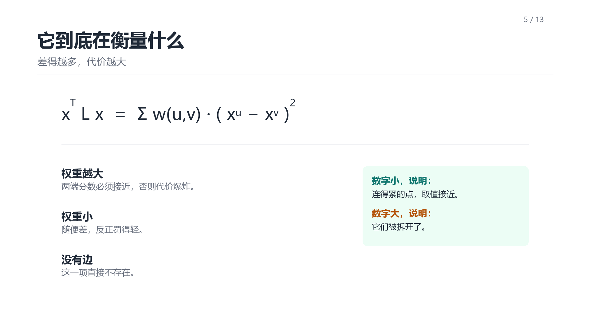
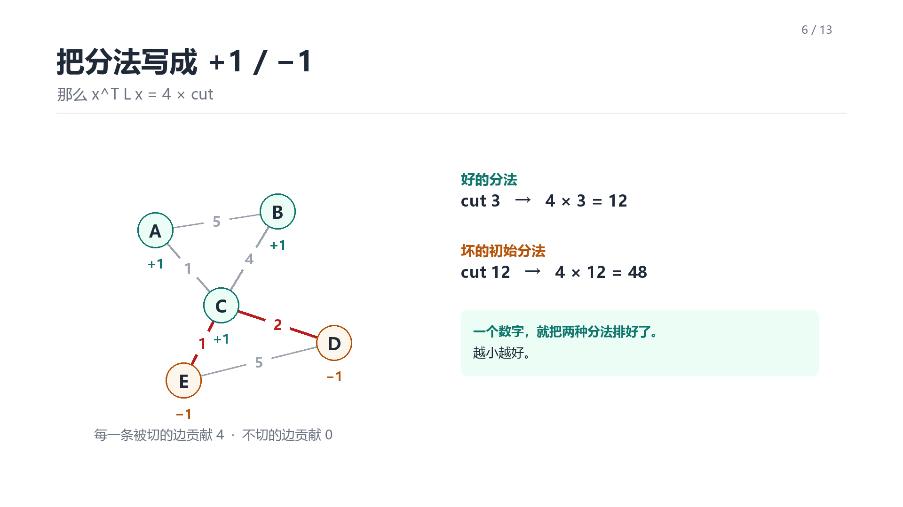
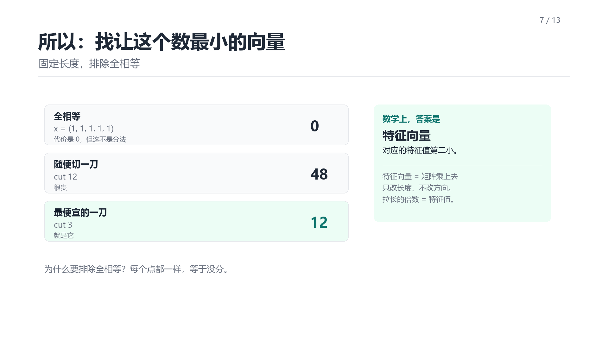
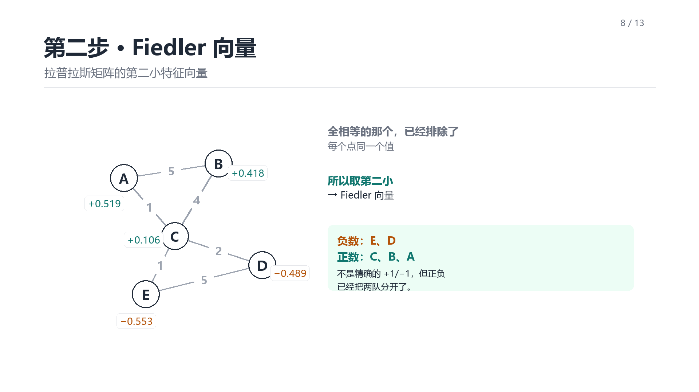
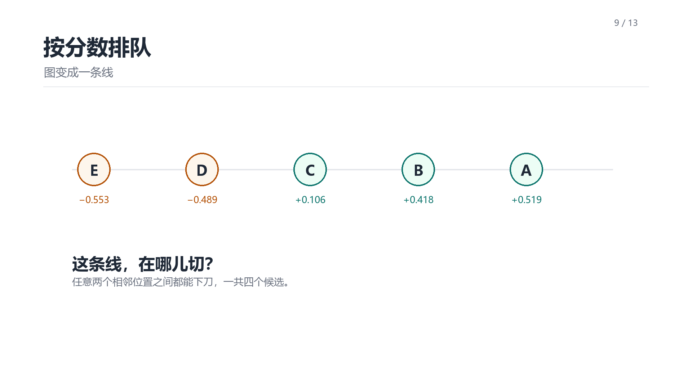
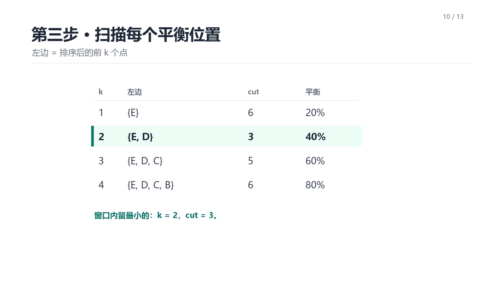
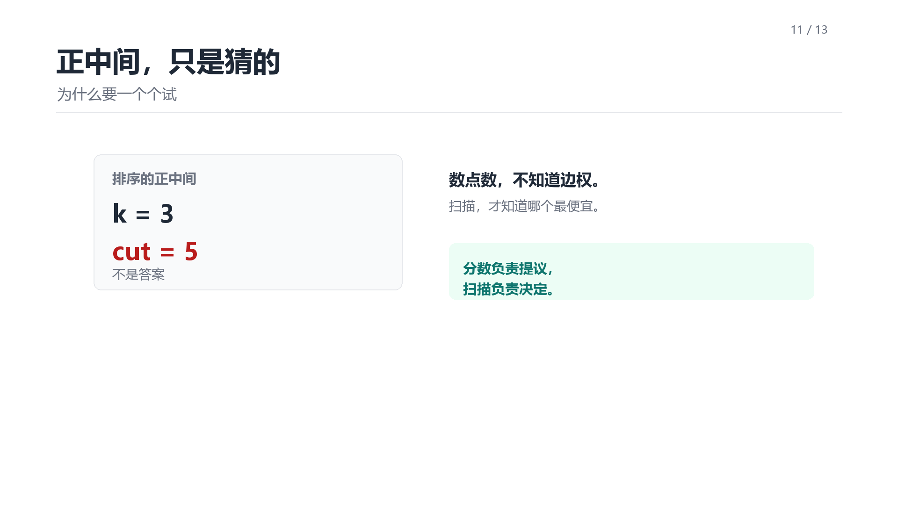
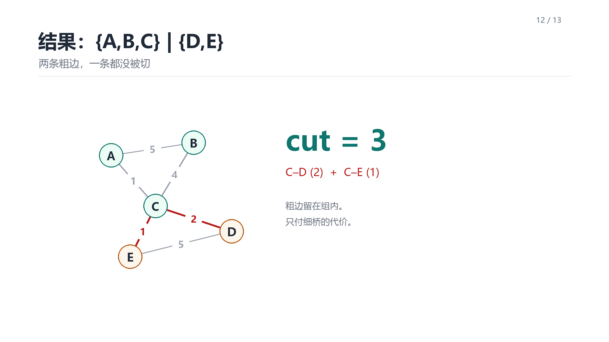
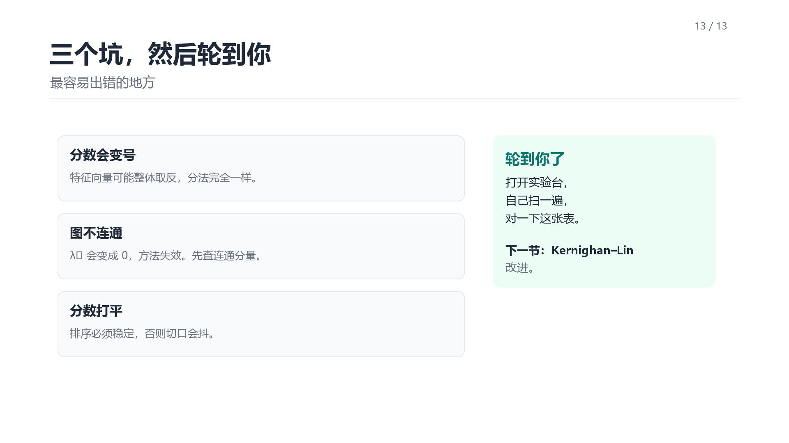
01 · 标题
这是聚类课的第三步：谱二分。从一张图开始，给每个点一个分数，再把这个分数变成一刀。三步，一张小图，不讲空话。
02 · 问题
五个点、六条带权边，要分成两堆。两个规则：切得少，两边别差太多。只求切得少很容易——把一个点单独拎出去就行。所以才有了平衡这条。
03 · 读权重
A、B、C 之间的边是 5、4、1，抱得很紧；D、E 之间是 5，也很紧。两组之间只有一座弱桥：2 和 1。所以答案几乎看得见。
04 · 拉普拉斯矩阵
第一步：搭拉普拉斯矩阵。对角线是每个点的加权度数，每条边在非对角线放负的权重。每行加起来等于 0，这是自检点。
05 · 它衡量什么
xᵀLx 等于“每条边的权重 × 两端取值差的平方”之和。也就是说：连得紧的两个点，取值差得大，代价就高。
06 · Fiedler 向量
最小的特征向量是平的，全是同一个值，没用。第二小的才是 Fiedler 向量。这里 E、D 是负的，C、B、A 是正的——正负本身已经是建议。
07 · 排序
E、D、C、B、A 排成一条线。图被压成了一维。任意两个相邻位置之间都能切一刀，所以有四个候选。
08 · 扫描
把每个平衡位置都试一遍：k=1 切出 6，k=2 切出 3，k=3 切出 5，k=4 切出 6。留最小的，所以选 k=2。
09 · 为什么不是中间
正中间不是答案：k=3 要付 5，不是 3。按点数切根本不知道边权。分数负责提议，扫描负责决定。
10 · 结果
A、B、C 对 D、E，cut 是 3。C–D 是 2，C–E 是 1，两条重边都留在簇内。和贪心、标签传播得到同一个答案，但一个点都没合并。
11 · 三个坑
特征向量可能整体翻号，分法不变；图不连通时 λ₂ 变成 0，要先查连通分量；分数有平局时要稳定排序。下一个模块：Kernighan–Lin 改进。